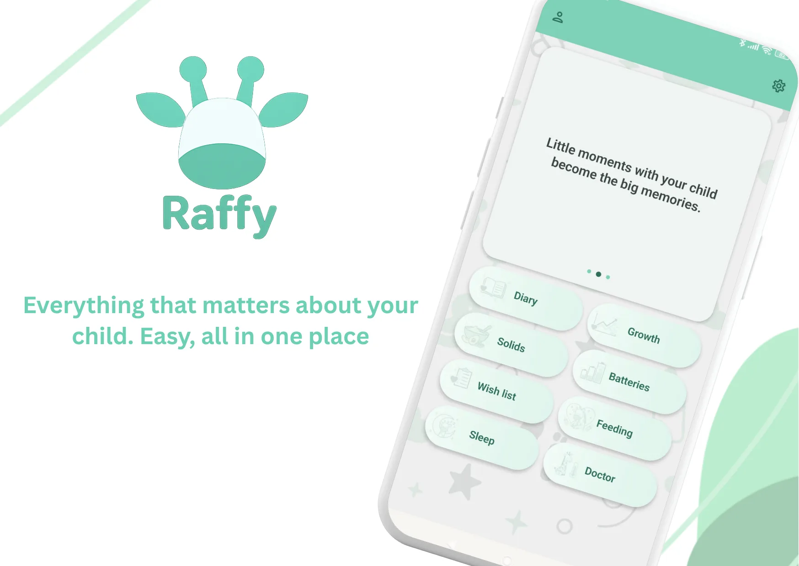
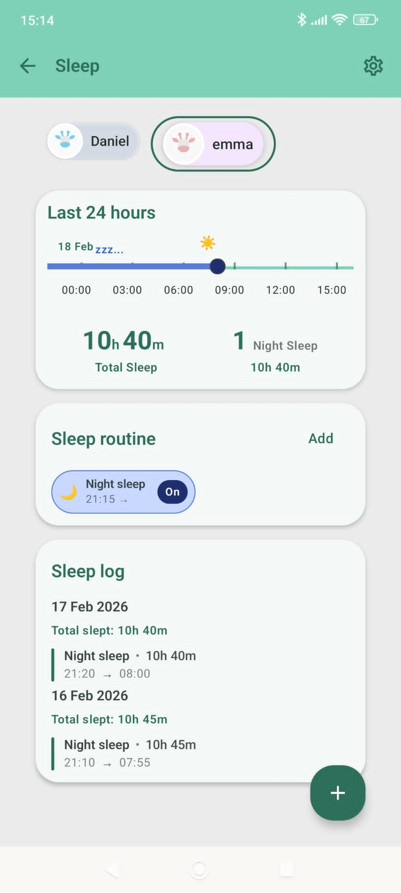
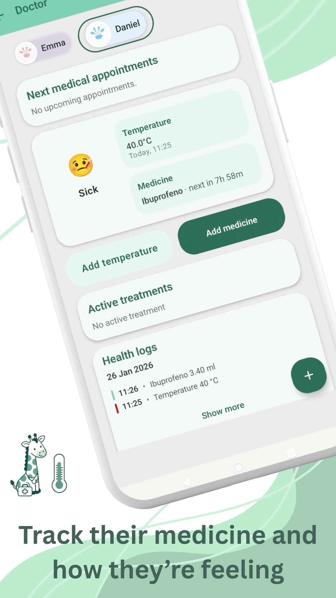

In questa pagina · 11 sezioni
In breve
Raffy è un’app Android gratuita per monitorare il neonato: nessun premium, nessuna pubblicità e nessun acquisto in-app. Esiste solo per Android, in inglese, spagnolo, francese e portoghese (non ancora in italiano), funziona offline e senza account e conta oltre 50 download su Google Play al 4 novembre 2026. Ha scopo educativo e non fa diagnosi; per qualsiasi dubbio sulla salute, parla con il tuo team pediatrico.
Cos’è Raffy
Raffy è un’app Android gratuita che raccoglie in un unico posto i registri di sonno, poppate, crescita, svezzamento e salute del tuo bambino. È sviluppata da Gurru Labs, una software house con sede in Spagna.
A chi è adatta
- Genitori e caregiver di neonati e bambini piccoli che vogliono un solo posto dove annotare sonno, poppate, crescita e appunti.
- Famiglie che vogliono promemoria, una routine quotidiana e uno storico da rivedere.
- Chi ha uno smartphone Android e cerca un’app che funzioni senza account e senza connessione.
Tieni tutto sotto controllo con Raffy
Sonno, pappe, crescita e routine in un'unica app Android gratuita.

Chi dovrebbe scegliere un’altra app
- Chi usa iPhone o iPad: Raffy è solo per Android.
- Chi ha bisogno dell’app in italiano o in un’altra lingua diversa da inglese, spagnolo, francese e portoghese. L’app è disponibile in inglese, spagnolo, francese e portoghese, non ancora in italiano: a essere tradotto è il sito, non l’app.
Prezzo
Gratis: nessun premium, nessuna pubblicità, nessun acquisto in-app.
Funzioni
- Sonno: registra pisolini, ora della nanna e finestre di veglia e vedi il totale delle 24 ore tra pisolini e sonno notturno. Crea una routine con gli orari dei pisolini e della nanna, con promemoria.
- Alimentazione: registra i biberon in ml o fl oz e l’allattamento con un timer sinistra/destra che ricorda l’ultimo lato. Include un registro delle 24 ore e un widget per la schermata iniziale.
- Crescita: annota peso, lunghezza e circonferenza cranica e vedili sulle curve OMS con percentili da P3 a P97, con una nota in linguaggio semplice.
- Farmaci e medico: tieni appuntamenti, temperatura in °C o °F, farmaci e dosi con l’orario della dose successiva e uno stato del bambino in un’unica cronologia della salute.
- Svezzamento: un piano dei pasti, gli alimenti che il tuo bambino ha già provato, le reazioni e un catalogo degli alimenti.
- Inoltre: un diario fotografico, una banca del latte materno, più bambini in un’unica app e unità metriche o imperiali.
Offline e sincronizzazione
Raffy funziona completamente offline e non richiede un account. Se scegli di accedere, i tuoi dati vengono salvati in backup e restano uguali su ogni telefono, sincronizzandosi quando torni online.
Privacy e i tuoi dati
Su Google Play, la sezione Sicurezza dei dati indica che nessun dato viene condiviso con terze parti e nessun dato viene raccolto, come dichiarato dallo sviluppatore. I dati sono cifrati in transito e puoi richiederne la cancellazione. Le statistiche di utilizzo si possono disattivare nelle Impostazioni. Leggi l’informativa sulla privacy e come richiedere la cancellazione dei dati.
Su Google Play
La scheda si chiama «Raffy: Baby Tracker & Feeding», di Gurru Labs, nella categoria Genitori e con classificazione per tutti. Conta oltre 50 download al 4 novembre 2026. Ultimo aggiornamento su Google Play: 26 ottobre 2026.
Screenshot




Strumenti web o app
Usa gli strumenti web gratuiti per risposte singole, come una stima del percentile OMS o un menù settimanale per bambini piccoli. Usa l’app quando vuoi registri continui, promemoria e storico nel tempo. In ogni caso, rivedi gli andamenti con il tuo team pediatrico.
Apri il pianificatore del menù settimanale | Apri il calcolatore di crescita OMS
Domande frequenti
Raffy è gratuita?
Sì. Raffy è gratuita su Android, senza piano premium, senza pubblicità e senza acquisti in-app.
Esiste una versione per iPhone?
No. Raffy è disponibile solo per Android, tramite Google Play. Non esiste una versione per iPhone o iPad.
In quali lingue è disponibile Raffy?
L’app è disponibile in inglese, spagnolo, francese e portoghese. Non è ancora disponibile in italiano: il sito è tradotto, l’app no.
Raffy fa diagnosi di problemi di salute?
No. Raffy ha scopo educativo e non fa diagnosi. Ti aiuta a registrare e rivedere le routine del tuo bambino, ma non sostituisce il tuo team pediatrico. Se sei preoccupato per la salute del tuo bambino, parlane con loro.
Fonti
- Google PlayRaffy: Baby Tracker & Feeding
- RaffyHome page di Raffy
- RaffyInformativa sulla privacy
Abbiamo verificato questa pagina con queste fonti il 4 nov 2026. Contenuto educativo, non è un consiglio medico. Politica editoriale